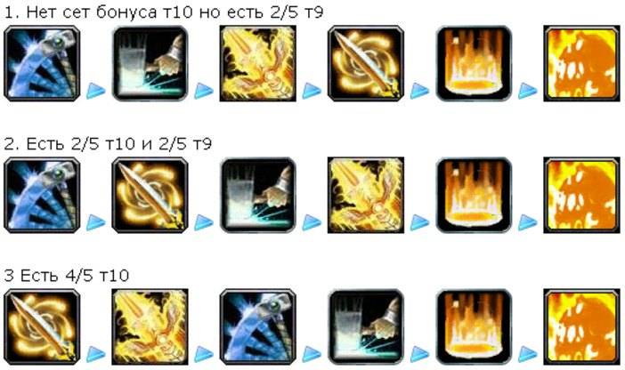

Здравствуйте уважаемые почитатели такого класса персонажей, как ретро паладин. Ретро пал – это незаменимый класс во всех рейдовых подземельях, так как имеет первоклассный набор бафов для всего рейда, а также имеет хорошую защиту в виде латной брони и неплохую выживаемость в тяжелейших боях против элитных боссов.
Билд 1.
Довольно широко применяется раскладка талантов 11/5/55 и, скажу я вам, она себя полностью оправдывает. Многие твердят, что Ретри Паладин исключительно однокнопочный — однако это не так. Нужно не только уметь пользоваться основными ДПС абилками, но и иметь представление о грамотном применении Мастера Аур. Этот билд просто совершенство, так как Ретри Паладин будет себя довольно свободно чувствовать в сложнейшие для рейда минуты и продолжать вливать отличный дамаг по цели.
1.«Меткость» — эта характеристика в рейтинге занимает первое место. 32.8 единицы рейтинга мастерства, увеличивает вашу меткость на 1 процент. На 80-том уровне необходимо набрать 263 единицы к рейтингу меткости или 8 процентов. Это для того, чтобы вы не промахивались специальными ударами, белыми ударами и правосудиями. Хочу так же отметить, что освящение и экзорцизм являются заклинаниями и каждое из них требует около 17 процентов хита и, только поэтому, вы можете все еще промахнуться этими заклинаниями. Так же у вас должен быть хороший кап, чтобы вы в бою смогли выдавать превосходный ДПС. Вы не должны его набирать камнями или зачарованиями, так как он очень легко набирается при помощи различных бонусов со шмота.
2.«Мастерство» – этот стат вам полностью позволит исключить в бою возможность противника уклониться от ударов, но полностью исключить вероятность парирования вы не сможете, ведя бой перед боссом, так что всегда, запомните, ВСЕГДА дамажте только сзади противника, нанося удары в спину. 8.2 к рейтингу вам дадут 1 единицу экспертизы. Чтобы вы достигли необходимого уровня капа вам необходимо набрать – 26 единиц или 6.5 процентов или 214 единиц к экспертизе. Если вы используете меч или булаву, то вам необходимо набрать 23 единицы к экспертизе, если вы используете булаву в роли Дварфа, то вам необходимо набрать 21 единицу к экспертизе, чтобы набрать необходимо количество капа и ваш ДПС будет просто на высоте. Но не советую тратить драгоценные камни на экспертизу, позвольте данному стату расти естественно с глифами или гиром.
3.«Сила» — тоже является одним из главных статов, который нужно набирать после того, как вы набрали кап хита, потому что у вас есть множество талантов, которые поднимут вашу силу. 1 единица STR даст вам + 2 единицы к АП, увеличенные на 1.15 от заклинания «Божественная сила», которое находится в первом ряду – ветка на прото пала. Так же оно предоставит вам 2.3 к АП за STR. Вся сумма этих чисел поднимается дальше за счет наложенных бафов. STR поможет так же поднять силу ваших заклинаний. Я вам посоветую поставить на STR все камни, но только после того, как вы наберете необходимый показатель капа хита.
4.«Рейтинг критического удара» — Рейтинг крита так же неплохо поднимет ваш ДПС. Этот показатель не стоит поднимать на довольно высокий уровень и тратить на это ваши драгоценные камни. Вам необходимо всего лишь 45.9 к рейтингу крита, чтобы получить 1 процент к рейтингу на 80 левеле. Этот показатель так же не увеличивается за счет рейдовых бафов. Поэтому рейтингом критического удара я вам советую сильно не увлекаться.
5.«Скорость» или хаст – это такой показатель, который обрел популярность среди многих игроков World of Warcraft. Скорость поднимает весь ваш белый урон, а так же поднимает урон от SoV. Это дает несколько возможностей новых так по противнику. Увеличение скорости не уменьшит КД на ваши способности правосудия, но немного снизит КД на заклинания, а это является тоже неплохим показателем. Набирать АРП вам нет необходимости, потому что большая половин вашего урона наносится при помощи магии Света. АРП поднимает урон от таких заклинаний как «Удар воина света» и «Божественная буря». Все печати, «Экзорцизм» и «Освящение» остаются, к сожалению, в пролете.
3. Способности и заклинания
Они все такие как у предыдущих класов

Печать порчи основная печать ПвЕ ретри.
В первую очередь нужно собрать на боссе 5 стаков дота печати. При этом не нужно ставить больших кулдаунов, следить за маной. После того, как на боссе повис 5-тый стак — начинается переход к бурст фазе. Смело юзаем Гнев карателя. При постоянном использовании правосудия, проблем с мп быть не должно.
Так же не забываем про Печать повиновения — которую мы можем использовать в аое боях, т.к. она больше подходит для боев по масс трешу, а именно трешу. Максимальный и без натаскивания урон, то что нам нужно в самый начальный урон
А теперь конкретней к ротации:
Удар воина Света — первый, что бы быстрее настакать Манускрипт трех истин
Божественная буря — юзать всегда, когда нет кд, даже если кд откатилось вне очереди (а такое будет часто изза 2т10)
Правосудие мудрости/Правосудие света — большой дамаг + регенит мп/хп, юзать по кд
Экзорцизм — юзать только при инстант проке
Освящение — использовать когда стоят кулдауны на всех других абилках
На самом деле не так все просто, ротация изменчива и очень зависит от проков, которые в свою очередь зависят от статов и банального везения.
Ретри Паладин наверное единственный персонаж, который имеет стандартизированный набор символов, который проверен не только временем, но и опытом. Некоторые символы будут являться и более приоритетными, если у вас хромают некоторые характеристики.
Большие:
Символ правосудия — обязательный символ;
Символ Экзорцизма — стандартный символ;
Символ освящения — стандартный символ;
Символ печати отмщения — при нехватке мастерства;
Символ удара воина Света — при необходимости для экономии маны;
Малые:
Что удивительно, малые символы так же довольно хорошо подобраны и есть что выбрать для Ретри Паладина, что не скажешь про другие классы.
Символ чутья на нежить — дамаг по нежити + 1 процент;
Символ возложения рук — КД спадает на 5 минут быстрее;
Символ благословения королей — помогает сэкономить вам ману.
Символ благословения могущества — экономит реагенты в том случае, если в подземелье вы оказываетесь в роли единственного ретро паладина.
Голова — Магический знак страданий
Плечи — Великое начертание секиры
Спина —Свиток чар для плаща — скорость II
Грудь — Свиток чар для нагрудника — все характеристики VII
Наручи — Свиток чар для наручей — штурм II
Руки — Свиток чар для перчаток — крушитель
Ноги — Накладки для поножей из ледяной чешуи
Обувь — Свиток чар для обуви — штурм II
Оружие — Чары для оружия — берсерк
Выбор камней для ретро паладина, я бы сказал, очень скуден.
В Мета-сокет можно вставить Алмаз жестокого землеправителя, он даст неплохую прибавку к вашему рейтингу крита.
Слеза кошмаров ставится в гнездо для синего сокета. Обычно многие геймеры вставляют ее в грудь. Она нужна только для того, чтобы активировать мета-сокет.
В красное гнездо ставим Рельефный багровый рубин, можно вставить и Рельефное око дракона, если вы прокачали ювелирное дело.
В желтое гнездо вставляем Покрытый письменами аметрин, но здесь есть два условия:
— если, вставляя этот камень, вы активируете сокет-бонус на одежде.
— если сокет бонус увеличит вашу силу не меньше чем на 5 единиц.
Если у вас получится вдруг недокап на меткость, вы можете поставить на ваш вкус следующие камни: Прочный царский янтарь или Гравированный аметрин.
Голова — Освященный полный шлем клятвы Свету
Плечи — Освященные латные наплечники клятвы Свету
Грудь — Освященный боевой доспех клятвы Свету
Штаны — Освященные ножные латы клятвы Свету
Пятый кусок Т10 мы не берем, так как у нас получится перенасыщение меткости. Перчи берем другие, так как в них имеется скорость.
Перчатки — Раздирающие плоть рукавицы
Ступни — Приближение Апокалипсиса
Кольца — Пепельное кольцо непревзойденной мощи и Печатка Сумеречного Молота
Наручи — Поручи полной тени
Шея — Подвеска полутени
Пояс — кожа — Стеганый кушак Астрилиана
Спина — Развевающийся саван
Серьги — Миниатюрное поганище в колбе в колбе и Приговор смерти
Некоторые вещи были взяты именно с Ловкостью, чтобы не было перенасыщения меткости. Лучше поднять шанс выпадания крита, что для Ретрика Паладина также довольно круто.
В основном каждый Ретри Паладин имеет у себя несколько профессий, который наилучшим образом подходят для данного класса:
Ювелирное дело — возможность ставить уникальные камни.
Горное дело — ингры для ювелирки и зарабатывание голда.
Когда у вас достаточно голда и вы накопили в банке большое множество ингредиентов, то горное дело можно отменить и вкачать Кузнечное дело. Это даст вам возможность сделать три дополнительных гнезда для сокетов.
Инженерное и Ювелирное дело дают нам 340 хаст(по кд на перчатках) на 20 секунд и три улучшенных камня , что очень даже не плохо.
Для рейдов из еды лучшим вариантом будет Филе дракоперой рыбы-Ангела. Каждый час необходимо выпивать Настойку бесконечной ярости и при использовании крыльев обязательно добавляем Зелье быстроты.
Можно взять себе одну из дополнительных профессий «Кулинария», в результате прокачки вы получите себе множество блюд, которые помогут вам довольно хорошо поднять боле нужные характеристики.
12. Макросы Ретри Паладина
Макрос для Праведного Неистовства
Для Прото Паладина достаточно полезен. Бывает, что босс способен накладывать свои эффекты, которые будут негативно влиять на ваше аггро.
Отлично подойдет для моментов, когда Ретри Паладину не хватает исходящей угрозы. А нужна она, когда Ретрику приходится в процессе боя с боссом кайтить выбегающих монстров.
#showtooltip Праведное неистовство
#showtooltip Щит небес
/cancelaura Праведное неистовство
/cast Праведное неистовство
Работает с помощью нажатия всего одной кнопки, которая будет как включать, так и выключать ваше “Праведное неистовство”.
Так как Паладин достаточно часто пользуется своими дланями, то благоразумно на них сделать макросы, чтобы использование было намного проще.
#showtooltip Длань жертвенности
/stopcasting
/cast [@mouseover] Длань жертвенности
#showtooltip Длань спасения
/stopcasting
#showtooltip Длань защиты
/stopcasting
/cast [@mouseover] Длань защиты
#showtooltip Длань свободы
/stopcasting
/cast [@mouseover] Длань свободы
Длань будет применяться на цель, как только вы на нее наведете курсором. Для того, чтобы заклинания произносились без какой либо задержки, добавлена строчка /stopcasting. Обычно задержка происходит во время каста любого другого заклинания.
Макрос на “Возложение рук”
#showtooltip Возложение рук
/stopcasting
/cast [@mouseover] Возложение рук
Заклинание Паладина “Возложение рук” будет применяться на любого из союзников который попадет под ваш курсор мышки.
Иногда необходимо моментально применить бабл, однако бывают моменты, что этого не получается сделать, так как в процессе находится какое нибудь другое действие.
Так вот. Макрос обрывает данное действие и молниеносно накладывает на вас бабл. Бабл это одна из сейвовских главных способностей, поэтому его применение должно быть четко отлажено.
Довольно часто приходится диспелить как с себя, так и с других игроков рейда различные яды, болезни и другие отвратные вещи. Макрос вам в этом поможет.